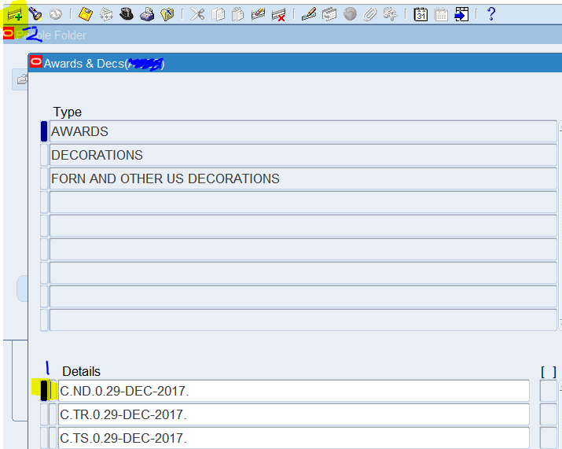
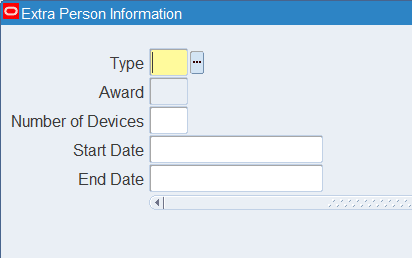
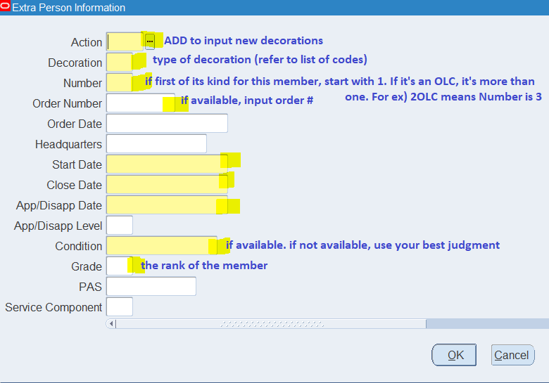

Decs are often received via mail or email and we manually add them to milPDS when they were not processed through vPC.
Steps to adding decs on milPDS:
SF>customer service>cust. support > career enhance. > wards n dec >
F11 > type in last name, first name initial + % (no space!)> ctrl + f11 >
Here, you'll see AWARDS and DECORATIONS. Refer to the button above and check the list to see what your dec is counted as (awards or decorations).
You'll see a list of awards/decs that the member already has.
Verify that the update is already made in milpds, if not, then you'll click the tiny blank space under Details (highlighted and labelled it 1 in picture below)
and then click the icon at the top left (highlighted and labelled 2 in the picture below)

For AWARDS, it will look like this:

while for Decorations it looks like this:

Further explanation on the Decoration input:
action: ADD to add a new decoration to the member's profile
dec: refer to reference for decorations to find milpds code from the button above
num: is how many of the same medal person has (so if first one, its 1)
order num: look at "special order' at bottom of the award, then only type in the numbers
order date: the "given under my hand date"
**skip headquarter
start n close date is the one above "accomplishments"
app/disapprov. date is same as order date
**leave app/dis. level blank
condition is at the bottom - condition matters because if they're retiring/pcsing we need to know what its for
grade is the dude's rank
pas - at the bottom but if just yyyy, skip
service component: always R (active duty)
>save
Decs in the mail
When we receive decs in the mail, we usually get 2 extra (printed) copies. Update to milpds using steps above, keep 1 copy then mail out other copy to AFPC (if no extra copy just scan it then toss into tab).
Our copy we scan into share drive.
Then put physical copy into the binder
The mail out copy in the correct drawer tab under the printer area (officer vs enlisted)
*we send to AFPC so they can update prda, takes 4-6 weeks to reflect on prda
If a mailed dec comes in with a "transittal of decorations" then scan both the dec and the transmittal to put into shared drive, then you can shred it
In the share drive, save in the relevant folder of the current year starting at the Uploaded Unsorted Mail Outs Folder. The name doesn't matter. The address is:
G:\SHARED\FSS\FSP\FSPM\FSPM - Force Management\Mail-Outs\Mail-Outs Uploaded\Uploaded-Unsorted Mail-Outs
Oak leaf clusters
"oak leaf clusters" means its not the first time the member got that specific medal.
Open in milpds > change number to the next number (if 1, then 2)
Change order number to most current one (so the special order at bottom of paper)
order date
** headquarter (leave blank)
start/close date
app/disa. date
** leave app/disapp level blank
condition
grade
PAS (if yyy..., then leave blank)
if a dec comes in a puffy, keep that in note and after processing it,
put in the binder with the note it came in a puffy,
then store the puffy in the cabinet
sometimes we receive decs of people who are not at the base anymore,
we have to send the dec to the MPF of their next base so they can take care of it